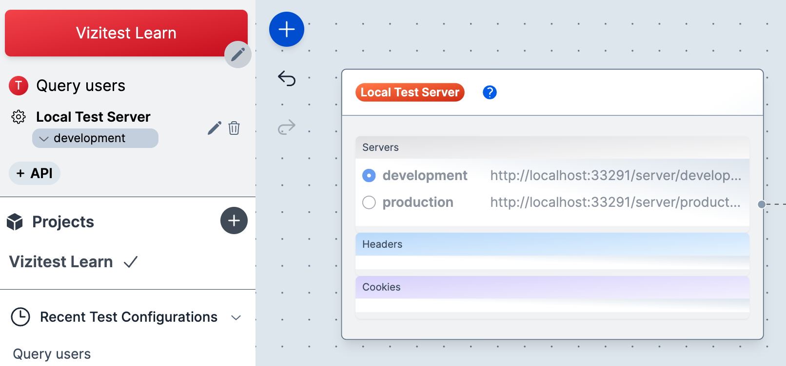

Overview
The above video explains the main concepts.
Referencer component
APIs are created and configured in the left sidebar. When you create a new test, you reference one of these APIs. You will see the available servers you have configured as well as which server is currently active.

Purpose
The purpose of the Referencer component is to allow commonly used headers and cookies as well as security configurations to be applied to a test.
This prevents having to add them to each test.
You can select which items you want to use in the Referencer component and they will then be applied to the test.
Change active server
You can change the active server for an API by selecting it from the dropdown beneath the API name in the left sidebar. When you do this, the referencer will also change to reflect this.